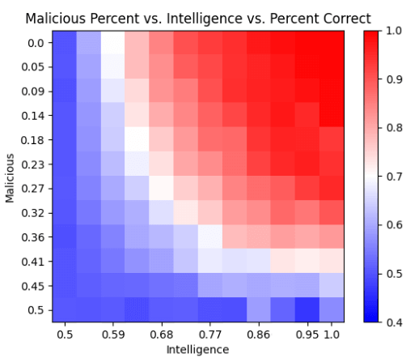
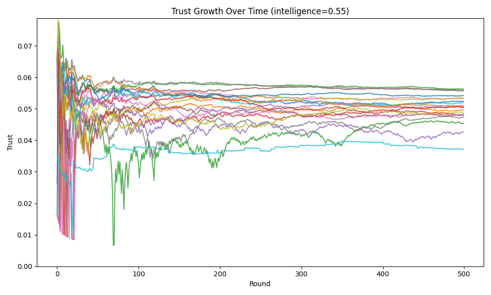
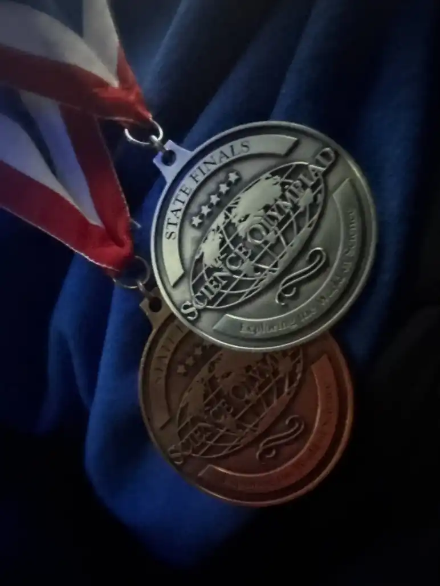
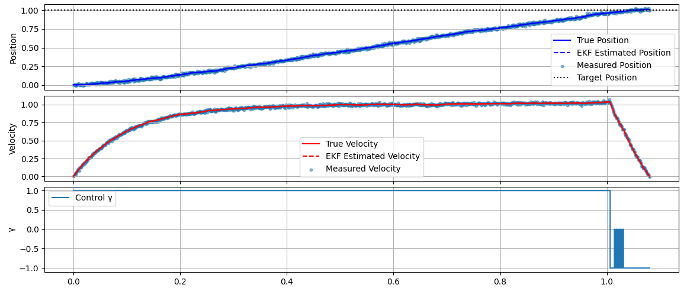

About Me
Hello! I'm Theo Grigorenko, a high school student interested in numerical simulations and applied artificial intelligence (especially with robotics).
Please scroll to see the projects below and learn more about them (hover over the videos for them to play).
Robotics Project
Latest version — Swapping between multiple aruco markers
Videos were recorded at 2 separate times
Previous Versions
Version 4
Version 3
Version 2

Second 3D Model
Purpose
A scalable platform prototype for public safety against unauthorized drone activity. With drones becoming more affordable and autonomous delivery services emerging, there is a growing need to detect, track, and report unauthorized flying objects near governmental, public, and private buildings.
Quick Overview
- Turret: Unloaded paintball (toy) gun
- Frame: Latest version using cut aluminum sheets
- Detection: D-Fine / YOLOv4 on self collected and annotated dataset
- Range: Tracks up to 200 feet away
- Video: Custom iPhone app streams to laptop (up to 15x zoom)
- Parts: 3D printed mounts and components
Other Projects:
Satya
Voting functionality on the Satya app
Satya is an information consensus platform for experts to monetarily back or challenge statements.
Experts are able to build their expertise through voting which is optimally weighed to maximize the accuracy of the consensus.
Electric Vehicle (SciOly Event)
New York State performance
Science Olympiad event with the objective of a miniature electric vehicle traveling a distance (8 meters to 10 meters) with the greatest accuracy and speed.
I won a silver medal at the New York State competition (2025) using a PID controller to modulate the voltage applied to the motor.
Voting functionality on the Satya app

Resilience of estimation simulation

Experience estimation simulation
Satya is an information consensus platform for experts to monetarily back or challenge statements.
Experts are able to build their expertise through voting which is optimally weighed to maximize the accuracy of the consensus.
The charts and graphs above show a simulation of random truthful and malicious agents assigned an intelligence value. The agents are then given statements to vote on, and the simulation shows how the estimation of agents' experience changes over time and the resilience of estimation.
The app is available on Windows and iOS.
New York State performance

Silver medal 🎉

Simulation of optimal control
Science Olympiad event with the objective of a miniature electric vehicle traveling a distance (8 meters to 10 meters) with the greatest accuracy and speed.
I won a silver medal at the New York State competition (2025) using a PID controller to modulate the voltage applied to the motor.